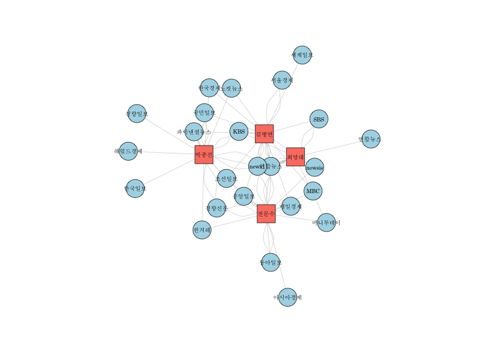

- HTML
- CSS
- Javascript
- 1. HTML
- 2. CSS
- 3. Javascript
1. HTML
2. CSS
3. Javascript
1. HTML
2. CSS
3. Javascript
HTML
Hypertext markup Language(HTML)
is a creating web page
A network can be considered a description of the paths along which something flows. This allows a characterization based on the type of flow and the type of path encoded by the centrality. A flow can be based on transfers, where each undivisible item goes from one node to another,
like a package delivery which goes from the delivery site to the client's house.
A second case is the serial duplication,
where this is a replication of the item which goes to the next node, so both the source and

the target have it.
An example is the propagation of information through gossip, with the information being propagated in a private way and with both the source and the target nodes being informed at the end of the process. The last case is the parallel duplication, with the item being duplicated to several links at the same time, like a radio broadcast which provides the same information to many listeners at once.[3]